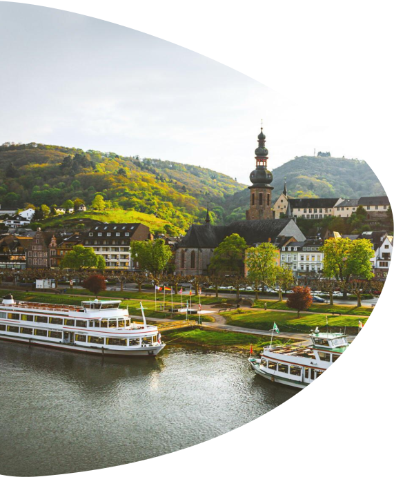
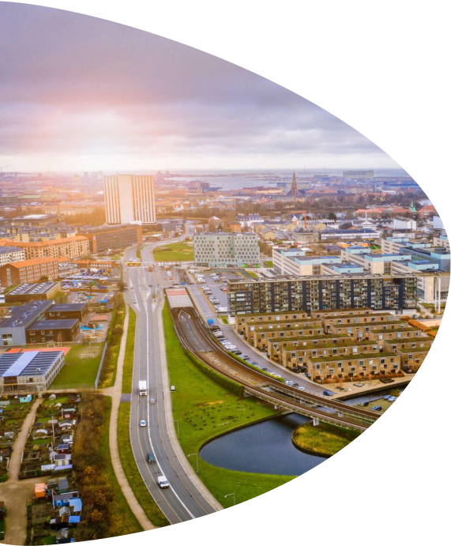
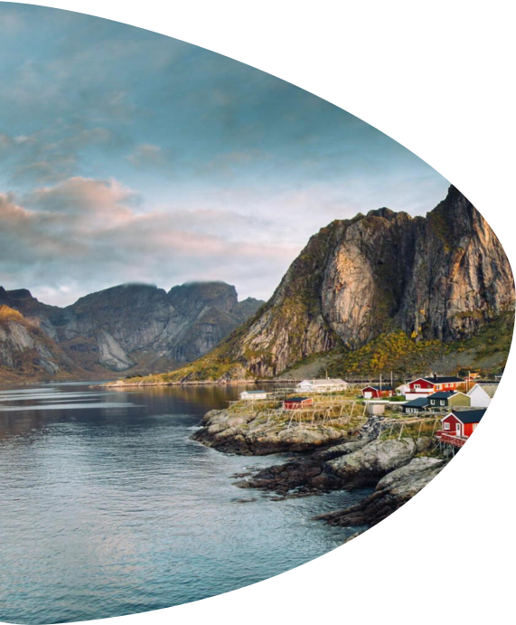
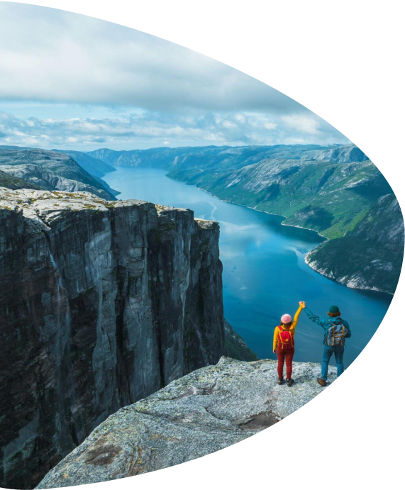
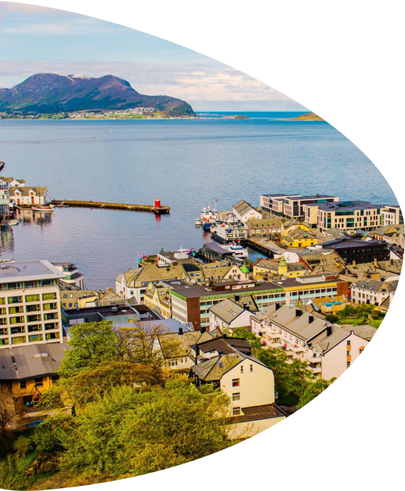
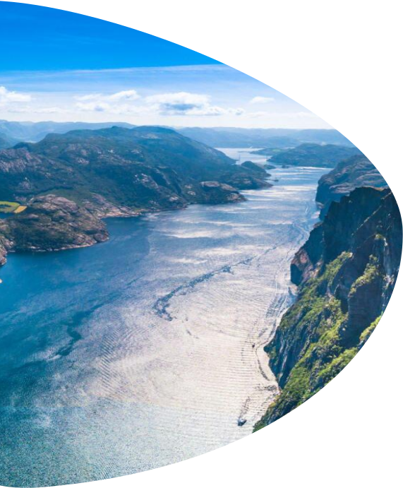
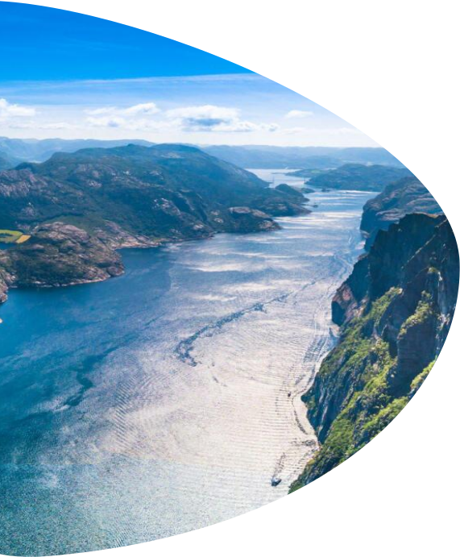
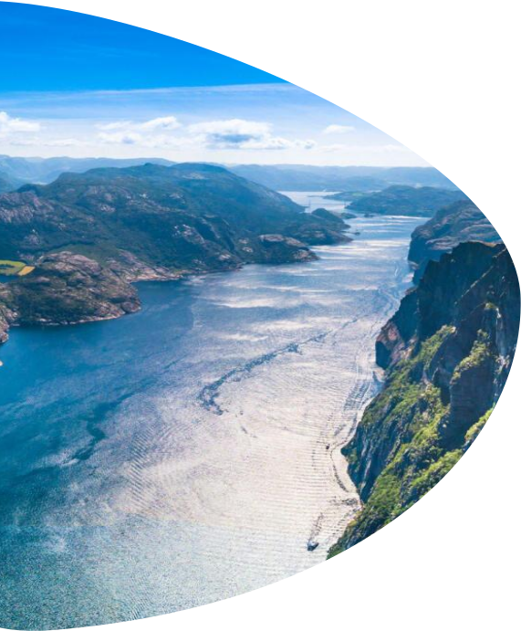

Норвежские фьорды считаются одними из самых впечатляющих природных образований в мире: высокие скалы, заснеженные вершины гор, кристально чистые воды. Разве такая невероятная красота может оставить кого-то равнодушным?
Круизное путешествие по норвежским фьордам – это неповторимый опыт, сочетающий в себе потрясающие природные красоты, культурные впечатления и незабываемые приключения.
Помимо Норвегии, в рамках маршрута, который мы рассмотрим в этой статье, Вы также посетите Германию и Данию.
ИНФОРМАЦИЯ О ТУРЕ
ВИЗА
ШЕНГЕН
(при необходимости откроем вам визу под круиз)
ТУР АКТУАЛЕН
с 11.05.2024
по
17.08.2024
СТОИМОСТЬ
от 1850€ за 2 взрослых
(сборы и питание включены)
ПРОДОЛЖИТЕЛЬНОСТЬ ТУРА
8
дней
ЛАЙНЕР
MSC Euribia
КАКИЕ СТРАНЫ И ГОРОДА ПОСЕТИТЕ
Киль (Германия)
Копенгаген (Дания)
Хеллесильт (Норвегия)
Молде (Норвегия)
Флом (Норвегия)
МАРШРУТ КРУИЗА
1
день
2
день
3
день
4
день
5
день
6
день
7
день
8
день






Киль, Германия
Ваше путешествие начнётся в Киле, одном из крупнейших немецких портовых городов, известный с 13 века. Именно здесь в 1918 году матросы подняли восстание, которое впоследствии привело к Ноябрьской революции и падению немецкой монархии.
Лайнер отправляется из порта Сент-Джордж в 19:00.
Что посмотреть:
здание Ратуши, музей подводной лодки U-995, Военно-морской мемориал в Лабё со смотровой площадкой, готическая церковь Св. Николая.
Копенгаген, Дания
В 8 утра следующего дня лайнер прибудет в первый пункт назначения - Копенгаген. Несмотря на то, что Копенгаген – столица Дании и самый большой город страны, это уютный, милый город с множеством старинных построек, живописных парков и набережных.
Также Копенгаген может похвастаться и богатым культурным наследием, приобщиться к которому ежегодно приезжает огромное количество туристов.
Отправление круизного лайнера из порта в 18:00.
Что посмотреть:
исторический центр города (район Фредериксстаден), гавань Нюхавн с разноцветными старинными домиками, королевский дворец Амалиенборг, памятник Русалочке, Мраморная церковь, самый большой фонтан Дании, крепость Кастеллет, замок Кристиансборг.
В море
Пока круизный лайнер MSC Euribia бороздит просторы Северного моря по направлению к следующей точке маршрута – Норвегии, у Вас есть возможность полюбоваться захватывающими скандинавскими пейзажами за бортом, а также насладиться богатой инфраструктурой на борту: 5 бассейнов, аквапарк, театр на 945 мест с ежедневной развлекательной программой, спа – здесь есть всё, чего только душа может пожелать!
Хеллесильт, Норвегия
В 9 утра Вы прибудете в первый норвежский порт - Хеллесильт. Впереди Вас ожидает долгий, но захватывающий день (лайнер отправляется из морского порта в 21:00).
Хеллесильт – это небольшая милая скандинавская деревушка с населением в 250 жителей, которая, несмотря на своё скромное население и масштабы, является одним из самых популярных туристических направлений Норвегии. Туристов привлекает разнообразие природных красот, компактно сконцентрированных возле деревушки: невероятный фьорды, водопады, горные тропики, ледники, кристально чистые озёра, обзорные площадки, с которых открываются захватывающие виды.
Что посмотреть:
Гейрангер-фьорд, глубочайшее озеро в Европе Хорниндальсватнет, смотровая площадка в ущелье Флюдаль и на горе на горе Далснибба, водопад Шторфоссен.
Молде, Норвегия
Сегодня Вас ждут не менее потрясающие воображение красоты Норвегии. Добро пожаловать в Молде – город на западе Норвегии, спрятавшийся среди грозных скал. Туристы приезжают сюда полюбоваться фьордами и завораживающими видами долины Ромсдален.
Отправление из порта Молде в новый город в 16:00.
Что посмотреть:
Молде-фьорд, долина Ромсдален, гора Варден и обзорная площадка, водопад Стигфоссен, лестница троллей, Атлантическая дорога.
Флом, Норвегия
Последний норвежский город, который Вы посетите на данном маршруте, – Флом. На осмотр достопримечательностей отведено 10 часов ( с 8:00 до 18:00).
Это небольшой живописный город Норвегии, известный многим туристам в первую очередь тем, что рядом находится самый длинный и глубокий фьорд Норвегии - Сонге-фьорд. Помимо этого, в окрестностях города простираются невероятно красивые пешие и велосипедные маршруты, пролегает старинная железная дорога.
Что посмотреть:
Сонге-фьорд, Фломсбан (старинная железная дорога с великолепными видами), Ралларвеген (дорога землекопов), музей под открытым небом Оттернес Бюгдетюн.
В море
MSC Euribia взял обратный курс на Киль. Сегодняшний день вы проведёте в море. Это отличная возможность отдохнуть, осмыслить свои впечатления, ещё раз насладиться размашистыми скандинавскими пейзажами или посетить полюбившееся место на палубе: например, провести день у бассейна, в спа-центре или панорамном лаундже Carousel
Киль, Германия
Ваше захватывающее приключение по норвежским фьордам на круизном лайнере подошло к концу. В 9 утра Вы прибудете в Киль. Нужно освободить каюту и покинуть корабль.
Если у Вас осталось время до обратного рейса, можете совершить лодочную прогулку по озеру Альстер, а потом пообедать в уютном кафе на набережной или заняться шоппингом.


 
